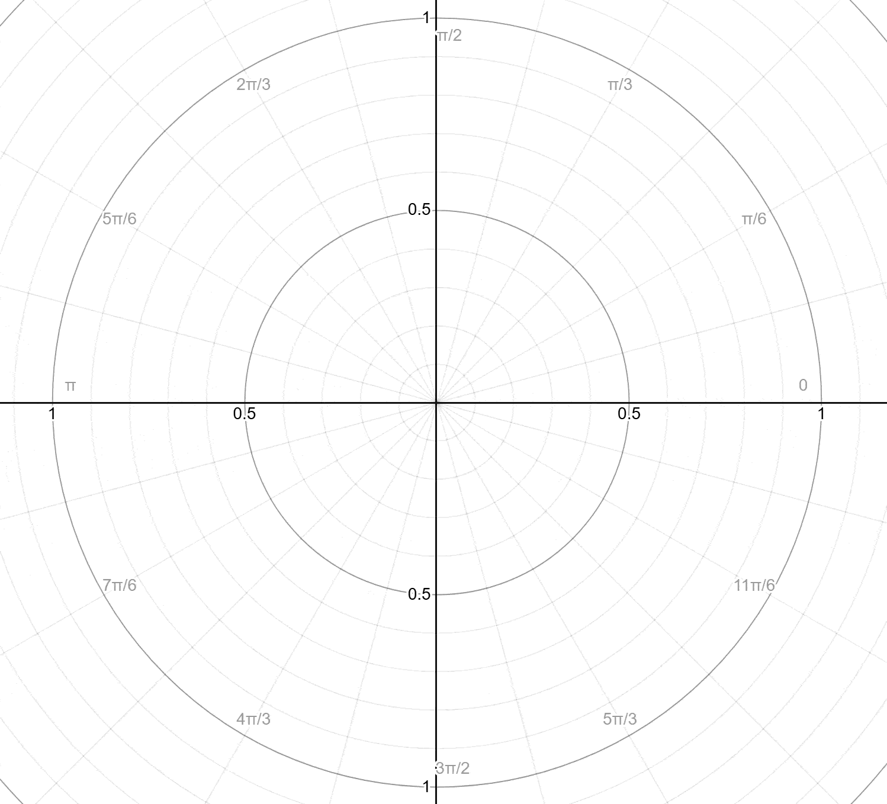
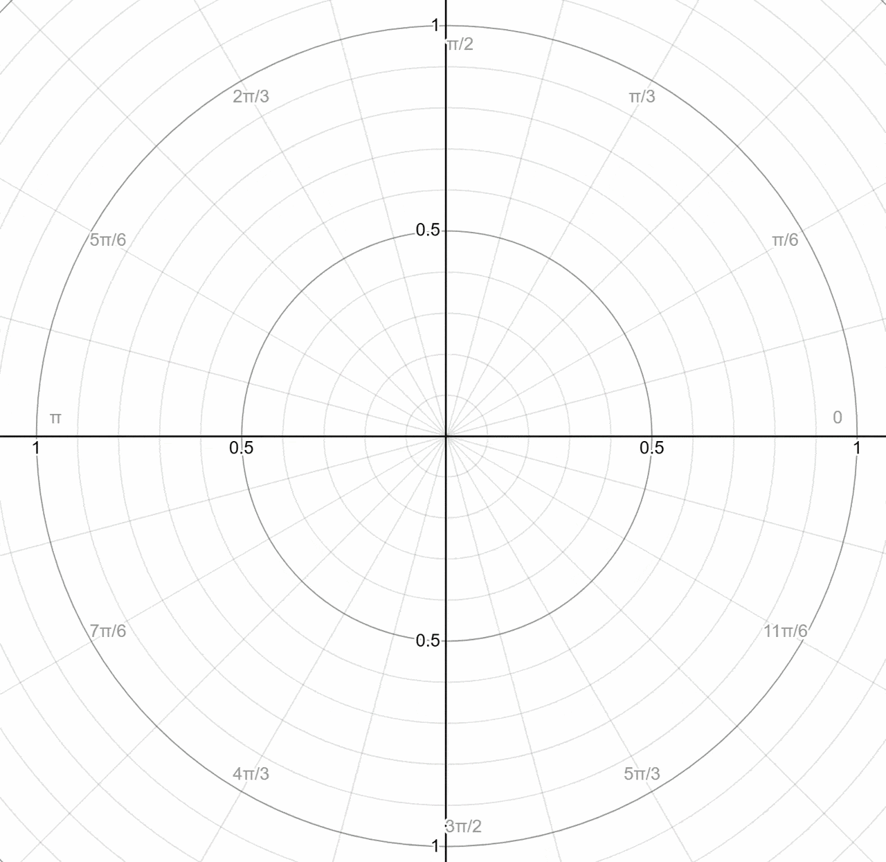

Page Views:
This visualization shows how the petals of r = cos(nθ)
behave for odd versus even values of n.
r Values
The value of cos(nθ) oscillates between 1 and
-1. When cos(nθ) > 0, the radius
r is positive, so the point is plotted in the usual direction.
In this visualization, those parts are shown in red.
When cos(nθ) < 0, the radius r is negative. A negative radius
means the point is plotted in the opposite direction, shifted by π radians.
In this visualization, those parts are shown in blue.
The graph below shows how the rose curve is traced as θ
increases from 0 to 2π. The red parts correspond
to positive radius values, while the blue parts correspond to negative radius values.
n
If n is even, the rose curve has 2n petals.
If n is odd, it has only n petals.
Why?
For odd values of n, the blue petals land exactly on top of
the red petals, so only n distinct petals appear. For even
values of n, the blue petals do not overlap with the red ones,
so the graph shows 2n distinct petals.
There is another useful way to understand why
r = cos(nθ) has n petals when
n is odd but 2n petals when n is even.
Start by looking at
r = |cos(nθ)|.
Now we only care about the distance from the pole, not the sign of
r. So whenever cos(nθ) is negative, the absolute
value makes it positive instead of sending the point to the opposite side.
Because of this, the graph of r = |cos(nθ)| always stays in the
current θ-direction, and for positive integer values of
n it always has exactly 2n petals.
Vary the value of n. You can see that
|cos(nθ)| has exactly 2n peaks from
0 to 2π.
Consider r = |cos(3θ)|. The parts where
cos(3θ) is positive are shown in red, so the absolute value
does nothing to them. The parts where cos(3θ) is negative are
shown in green, and the absolute value flips those radii to positive values.
So instead of being graphed on the opposite side, those green parts are graphed in
the current direction.

This gives a graph with 2n = 6 petals. Now imagine slowly “lifting”
the absolute value and turning |cos(3θ)| back into
cos(3θ). The red petals stay where they are, because those
values were already positive. But the green petals move to the opposite side,
because those values were originally negative. When they move, they land exactly on
top of existing red petals. That is why r = cos(3θ) ends up with
only 3 distinct petals.
Now try the same idea with r = |cos(4θ)|. Again, the graph has
2n = 8 petals. When we lift the absolute value, the red petals stay in
place, and the green petals move to the opposite side. But this time, the green
petals do not land on top of red petals. Instead, they simply swap positions with
other green petals. So there is no overlap, and the graph
r = cos(4θ) still has all 8 petals.

This gives another way to think about the odd/even difference:
n is odd, lifting the absolute value makes
some petals move onto existing petals, so the 2n petals collapse
into just n distinct petals.
n is even, lifting the absolute value only
rearranges the petals, so there are still 2n distinct petals.